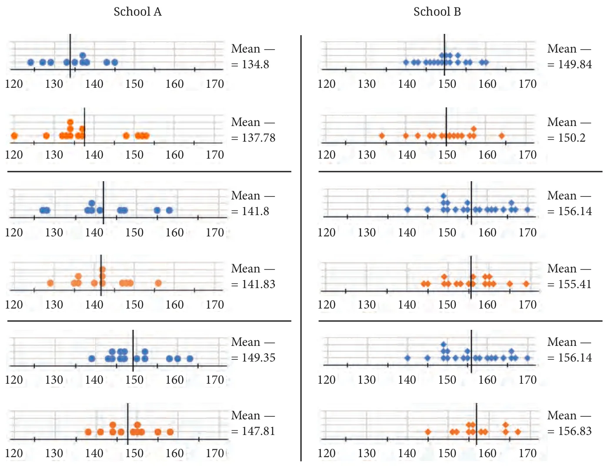
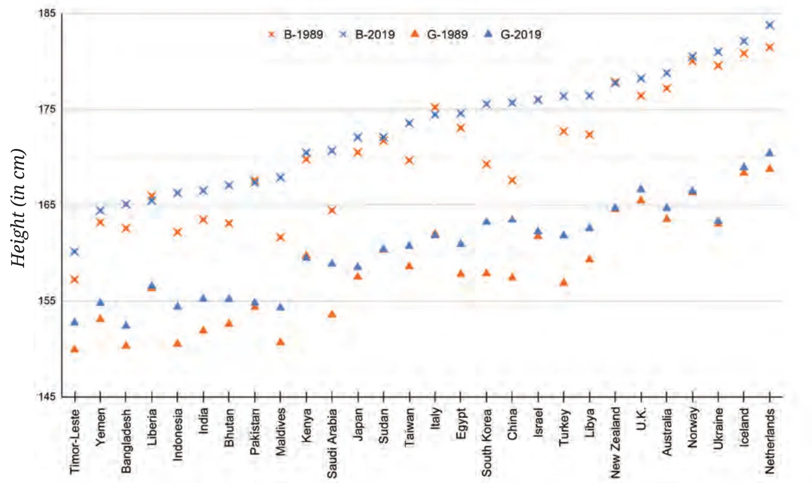

We put well-formed sentences one after the other to make a beautiful story. In the same way, well-organised and well-presented data can tell interesting stories, and can also expose new mysteries or help solve mysteries!
Telling Tall Tales
Earlier, we saw data of two Grade 5 classrooms with heights of boys and girls in each class. There, the average height of girls was more than boys in one class and vice versa in the other class.

Following are the dot plots of heights of boys (in blue) and girls (in orange) of Grades 6, 7 and 8 (in that order) of two different schools. What do you notice? Share your observations.

Looking at this data, you might wonder:
“Why is there a considerable difference in heights in the same grades across these two schools?”
“Where are these schools located?”
“How tall are students in Grades 6 to 8 in my school?”
“What is the average height of all Grade 6 boys and girls?”
We see that men are taller than women in general. But what about the heights of boys and girls? Are boys taller than girls? Well, just by looking at the data of one or two schools, we cannot generalise for all children in our country, or around the world.
Let us look at some data (based on a survey) of the heights of boys and girls of different ages in India over time. The following table shows the average heights of boys and girls (in centimeters) across ages 5 to 19 in the years 1989, 1999, 2009, and 2019. In each year, the first column shows boys’ heights and the second column shows girls’ heights.
| Age | 1989 | 1999 | 2009 | 2019 | ||||
|---|---|---|---|---|---|---|---|---|
| 5 | 101.3 | 100 | 102.4 | 101.7 | 105.1 | 104 | 107.1 | 107.2 |
| 6 | 107.5 | 106 | 108.7 | 107.5 | 111 | 109.7 | 113.1 | 112.9 |
| 7 | 113 | 111.4 | 114.2 | 112.6 | 116.2 | 114.8 | 118.6 | 118 |
| 8 | 118.1 | 116.5 | 119.2 | 117.5 | 120.9 | 119.6 | 123.5 | 122.7 |
| 9 | 122.9 | 121.7 | 123.9 | 122.4 | 125.2 | 124.5 | 128.1 | 127.6 |
| 10 | 127.5 | 127.3 | 128.3 | 127.8 | 129.4 | 129.9 | 132.6 | 132.8 |
| 11 | 132.2 | 133.4 | 132.8 | 133.6 | 133.7 | 135.7 | 137 | 138.6 |
| 12 | 137.7 | 139 | 138 | 139.1 | 138.9 | 141.1 | 142.2 | 143.8 |
| 13 | 144.2 | 143.2 | 144.3 | 143.1 | 145.2 | 145.1 | 148.4 | 147.7 |
| 14 | 150.6 | 146.2 | 150.5 | 146.1 | 151.5 | 148 | 154.4 | 150.4 |
| 15 | 155.4 | 148.5 | 155.2 | 148.4 | 156.3 | 150.1 | 159 | 152.4 |
| 16 | 158.9 | 150.1 | 158.7 | 150.1 | 159.9 | 151.6 | 162.3 | 153.8 |
| 17 | 161.3 | 151.2 | 161.4 | 151.3 | 162.6 | 152.6 | 164.6 | 154.7 |
| 18 | 162.9 | 151.8 | 163.2 | 152.1 | 164.3 | 153 | 166 | 155.2 |
| 19 | 163.5 | 151.9 | 164.2 | 152.4 | 165.1 | 153 | 166.5 | 155.2 |
Spend sufficient time observing the data presented in this table. Share your findings with the class.
These are some prompts for you to probe —
- Changes in the heights of boys or girls of a certain age from 1989 to 2019.
- The heights of boys vs. girls at different ages in a particular year.
- Changes in height between successive ages in boys and girls in 2019.
Which of the following statements can be justified using the data?
- The average heights of both boys and girls at every age increased from 1989 to 2019.
- The average height of 13-year-old girls in 1989 is more than the average height of 14-year-old girls in 2009.
- The average height of 15-year-old boys in 2019 is more than the average height of 16-year-old boys in 1989.
- All girls aged 13 are taller than all girls aged 11.
- Throughout the age period 5 to 19, the average boy’s height is more than the average girl’s height.
- Boys keep growing even beyond age 19.
In 2019, between which two successive ages from 5 to 19 did boys grow the most? Between which two successive ages from 5 to 19 did girls grow most?
Suppose the average height of a newborn is 50 cm. Estimate the average height of young children of ages 1 to 4.
Based on the trend observed in the table, write your estimates of the heights of boys and girls for ages 5 to 19 in the year 2029.
Whenever you see data or some graph, look closely to know the story it has to say and the mysteries it may hold.
You may want to look at the data of weights. Or you might be curious to see if such patterns are present in other countries as well. You might also wonder if humans were much shorter a few centuries ago! Also, are people in some countries taller than others? The following visualisation shows the change in average heights of 19-year-old boys and girls of different countries from 1989 to 2019.
How is the graph organised? What information is presented?

What do you find interesting?
Notice that the vertical line starts from 145 cm — this helps give a closer (zoomed in) look at the heights.

A Mean Decision!